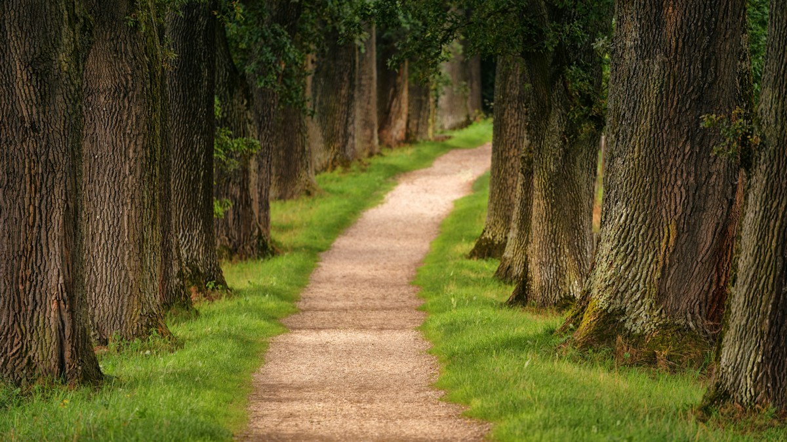

Plan a woodland walk
A little fresh air. A slower pace. Time to look around.

Take the scenic route
Follow the path through the trees and find a quiet place to pause. Bring comfortable shoes, a bottle of water, and a little curiosity.
Leave the trail as you found it, ready for the next person.